Each surface below is shown as built, with its route, source files, anatomy, interactions, and the data it consumes. States that matter for the build — empty, loading, degraded, suppressed — are documented alongside the happy path. All design width is 1440px; layouts are fluid down to a tablet breakpoint at 720–860px.
The entry point. Frames the product philosophy, then offers the three analytical modes plus a shortcut into the activity feed. No regime banner here — it's a calm, full-bleed welcome.
Hero block — eyebrow, headline ("Choose how you want to look at the market."), and the one-paragraph thesis: three independent indicators, never a collapsed score.
2
Three mode cards — Single Ticker · Portfolio · Scan/Discovery. Each shows an icon, description, and the tier rules that apply in that mode. Whole card is the click target → switches mode.
3
Activity-feed banner — a wide button into Alerts, surfacing live counts (needs-attention, alerts, tier changes) pulled from feedCounts().
4
Footer stats — live cycle cadence, scan-universe count, current market regime.
◆
Build note: the mode cards' "Tier rules" line is load-bearing copy — it sets the user's expectation that Single Ticker has no A indicator. Keep it.
The deepest surface and the shared detail view all modes drill into. A two-column layout: the evidence column (left, wide) and the verdict column (right, narrow). Single-ticker mode applies B + C rules — indicator A is shown as N/A because there's no peer universe.
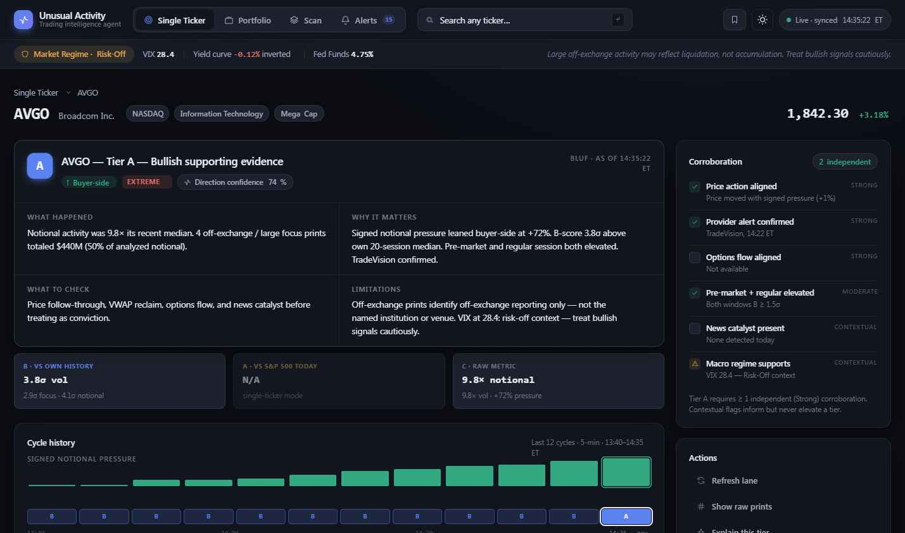
AVGO · Tier A · Bullish — BLUF, A/B/C summary, cycle history (left); corroboration + actions (right).
1
Breadcrumb + ticker head — origin-mode crumb, symbol (mono), company, exchange/sector/cap pills, review chip, and price with signed % change.
2
BLUF card — "Bottom Line Up Front". Tier badge (lg) + headline + direction tag + band + direction-confidence pill, then a 2×2 grid: What happened · Why it matters · What to check · Limitations. This is the single most important component — it is the plain-English verdict.
3
A/B/C indicator summary — three chips making the framework explicit. In single-ticker mode the A chip reads N/A; in portfolio/scan it shows the universe percentile.
4
Cycle history timeline — last 12 cycles (5-min): signed-pressure bars above/below a zero line, a tier ribbon (A/B/C/D per cycle), a time axis, and event chips (tier transitions, confirmed alerts).
5
Evidence grid — the 8 evidence cards (detailed below).
6
Corroboration panel (right) — 6 flags across Strong / Moderate / Contextual independence, with the count of independent confirmations and the elevation rule restated.
7
Actions panel (right) — refresh lane, show raw prints, explain tier, compare to prior cycle, mark reviewed, add to watchlist, use as supporting evidence, ignore this cycle. Toggles show an "ON" state.
The 8 evidence cards
Each is a collapsible EvCard with an icon, title/subtitle, a headline metric, and a body of charts + key-values. Cards 1–3 open by default; the rest start collapsed.
#
Card
Headline
Body contents
1
Volume Anomaly
Notional ratio ×
Band tag, B-score pill, VolBars (today vs 20-day baseline by bucket), volume/notional/trade-count ratios, B-score.
2
Block / Off-Exchange
Focus print count
Focus notional / share / largest, venue split bar (off-exchange vs lit), focus count, largest print, block pressure, B-score.
3
Directional Pressure
Net pressure %
Pressure gauge (signed), net notional & volume pressure, signing-confidence bar, signing-method mix (quote/tick/mid/unknown).
4
Pre-Market Activity
Pre-mkt vol ratio
Volume ratio, pressure, gap %, decay state (60-min half-life), pre-market B-score. Empty state when no pre-market prints.
Lane rows, coverage %, prints analyzed, condition-excluded count, latest event, policy version, refresh-lane button.
i
Cards 6 (Confirmed Alerts) and 7 (Options Flow) back the matching Strong corroboration flags. Both are optional lanes: when absent they never lower a tier — only present, aligned evidence can corroborate upward. This asymmetry is core to the trust model.
2a · Explain-this-tier modal
Opened from Actions. Turns the rule engine inside-out: shows the verdict, each rule that was evaluated with pass/fail, a "why not the next tier up?" gap, and any elevation eligibility. This is the auditability promise made literal.
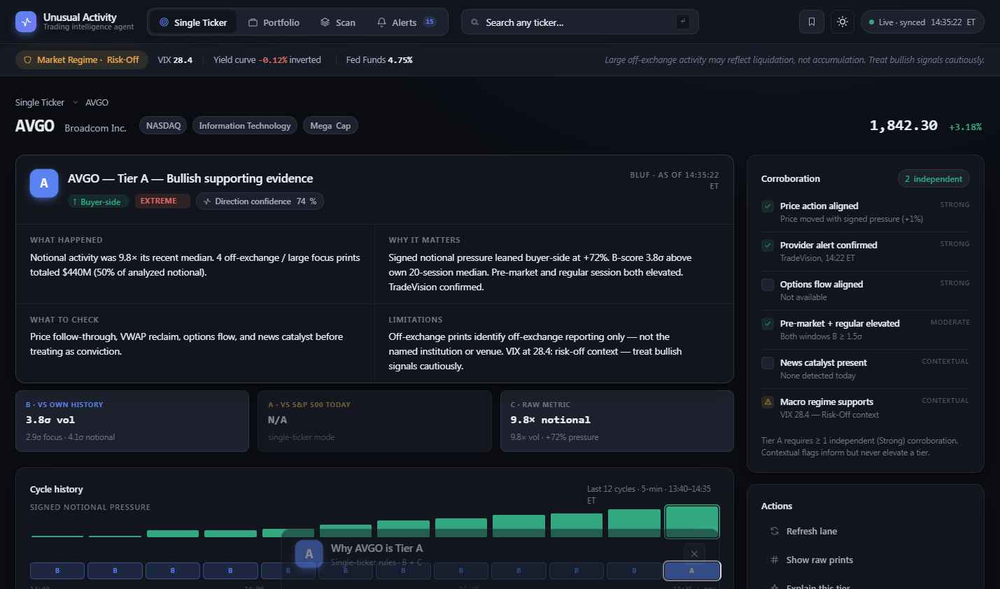
Explain modal · rules evaluated with ✓/✗, gap-to-next-tier, and provider elevation note.
2b · Raw-prints drawer
Opened from Actions. The auditable underlying data: top prints by notional, focus prints highlighted, with time / price / size / notional / venue / signed side / signing method / condition codes. Footnote documents the condition-code policy (which codes are shown vs excluded).
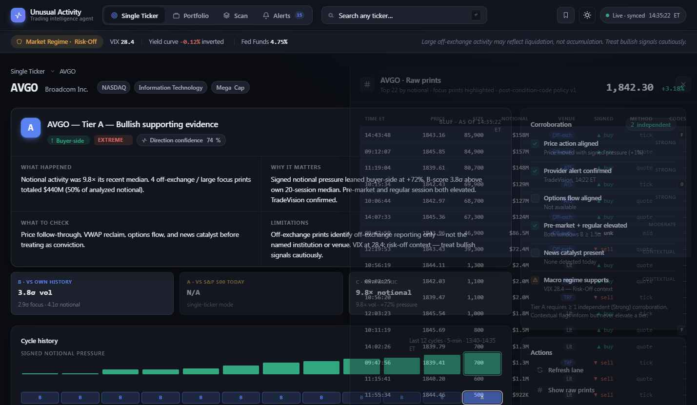
Raw prints · venue chips (Off-exch / ATS / TRF / Lit), buy/sell signing, condition codes. Post-policy-v1 view.
2c · Compare-to-prior-cycle
Toggled from Actions. Injects a delta banner above the BLUF and inline ± deltas into the A/B/C chips. Attributes the tier move to the specific indicator(s) that crossed a gate this cycle (e.g. "B cleared 2.5σ").
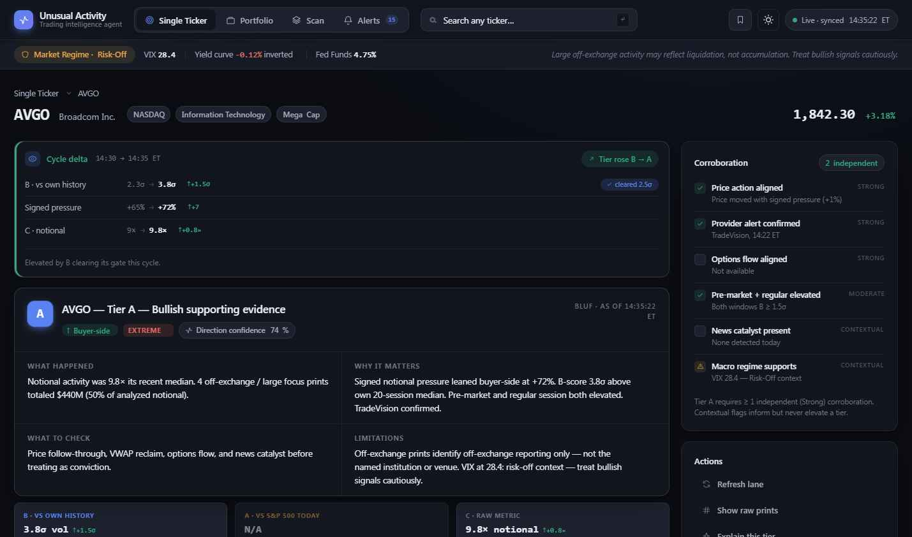
Cycle delta · prior → current per driver, with gate-crossing callouts and a plain-English summary.
2d · Tier D — suppressed state
When a required lane is loading or the sample is below threshold, no tier is emitted. The detail view degrades gracefully: BLUF explains the suppression, evidence is replaced by a lane-health panel and the 9-state legend, and a "Refresh Live Trade Slices" CTA drives revalidation. The cycle history still renders, ending in a dashed D cell.
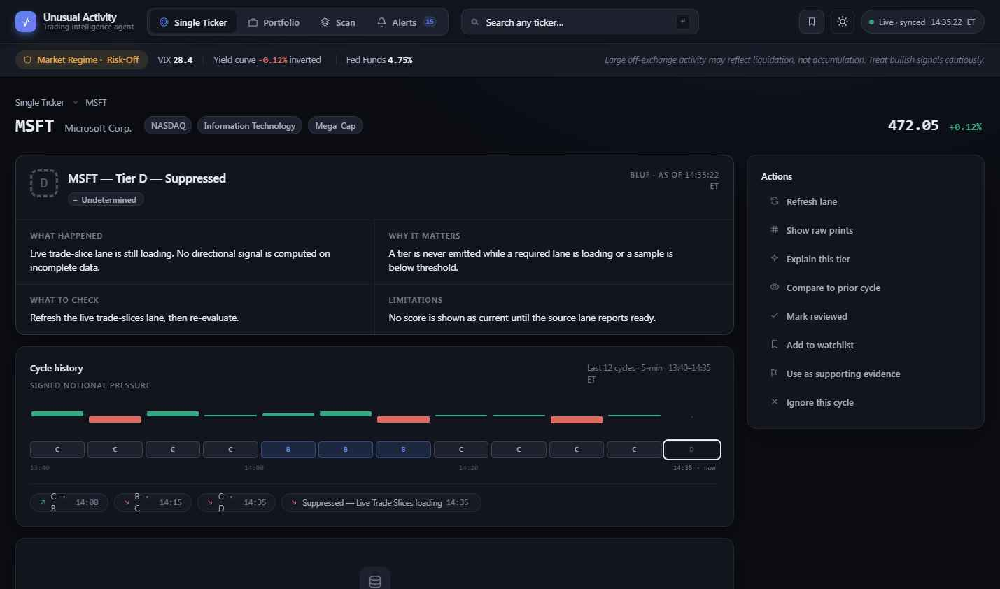
MSFT · Tier D · Suppressed — the product refuses to guess on incomplete data. This honesty is a feature, not an error screen.
Your holdings ranked by activity, so the most unusual names float to the top. Indicator A is computed relative to your portfolio. Rows that changed tier since the last cycle are flagged. Click any row → shared detail view (with portfolio rules).
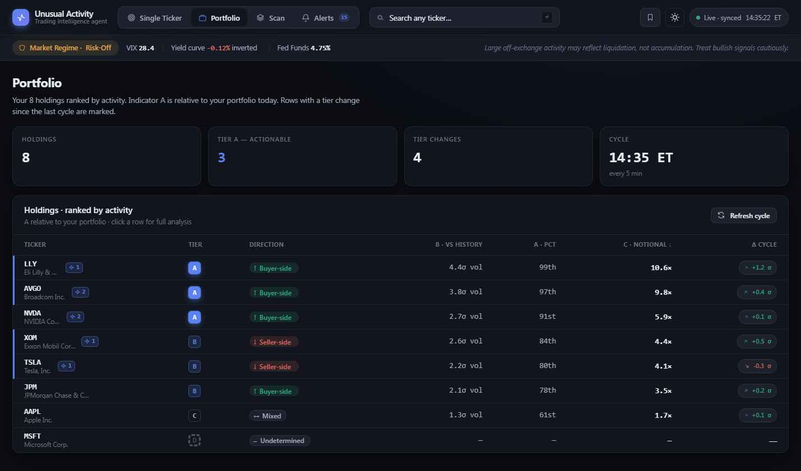
Portfolio · stat cards + ranked holdings table with tier, direction, B/A/C metrics, and Δ-cycle chips.
1
Stat cards — Holdings · Tier A (actionable, accented) · Tier changes · Cycle time.
2
Holdings table — sortable columns: Ticker (symbol + name + review/rule flags), Tier badge, Direction tag, B (σ vol), A (percentile), C (notional ×), Δ cycle. Tier-changed rows get an accent left-edge; ignored rows dim.
3
Refresh cycle button — triggers a revalidation pass.
4
Tier-D rows render dashes across metrics — never fabricated values.
Search a whole universe for names matching bullish or bearish criteria. The signature interaction is a two-pass pipeline: Pass 1 cheaply screens every constituent from daily bars; Pass 2 pulls live slices for the shortlist and resolves each to full A/B/C — visibly, row by row.
4a · Controls & idle
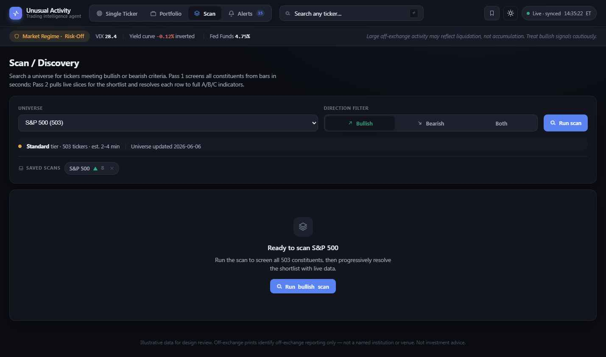
Idle · universe picker (grouped: Index / Sector / Custom), direction filter, performance-tier readout, saved scans, run CTA.
Universe select shows constituent count and a performance tier (Fast / Standard / Extended) with an estimated runtime — Extended universes default to Pass-1-only.
Direction filter — Bullish / Bearish / Both segmented control.
Saved scans — recall a universe+direction combo; persisted locally.
4b · Running — the funnel
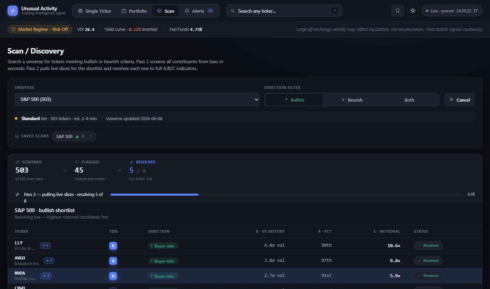
Pipeline live · Screened → Flagged → Resolved funnel, progress bar, and rows resolving highest-notional-first.
1
Funnel — three stages with live counts: Screened (of N from bars) → Flagged (cleared pre-screen) → Resolved (n / total full A/B/C). The active stage is accent-keyed; the done stage turns green.
2
Progress line — phase label + bar + %. Pass 1 screens fast; Pass 2 resolves the shortlist with a per-row delay.
3
Resolving table — rows show preliminary ~Bσ while queued, a "Resolving…" pulse on the active row, then "✓ Resolved" with full values. Rows aren't clickable until resolved.
4c · Results — three comparable views
Once resolved, a refinement bar appears: tier filter chips (All / A / B / C), a view switcher, and bulk actions (Watch all shown · Save scan). A "Matched" row restates the criteria each result satisfied. The view preference persists. The three views present the same data at different densities:
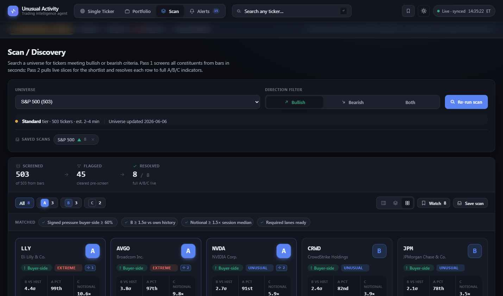
Signal cards (default) · symbol, tier (lg), direction + band + rule flag, B/A/C stats, signed-pressure bar, watchlist star.
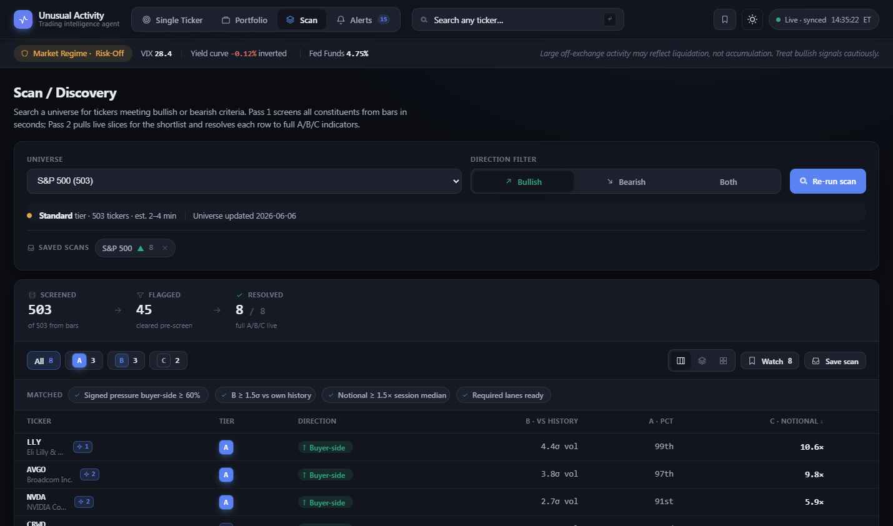
Table · dense, sortable, scannable.
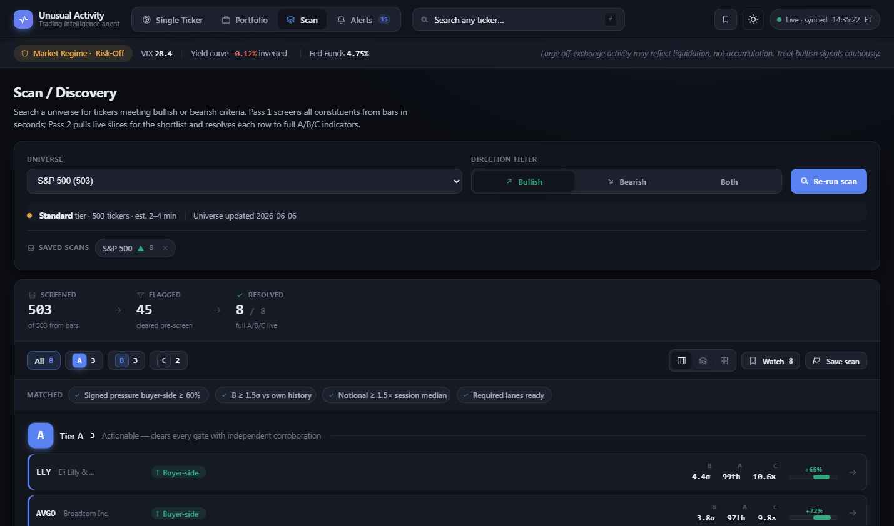
Grouped by tier · sections with tier meaning + rows.
i
The three views are not cosmetic variants — they map to three user intents: cards for triage/glance, table for sorting/comparison, grouped for "show me only the actionable tier". Keep all three and persist the choice.
Everything that moved this cycle, newest first — confirmed provider alerts, tier changes, news catalysts, data-lane events, and matches from the user's own alert rules. Filter chips slice the stream; each row drills into detail.
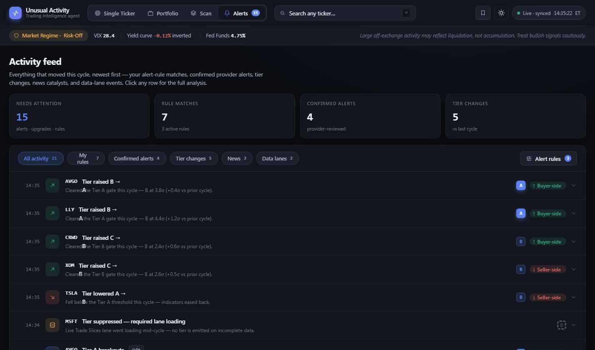
Activity feed · stat cards, filter chips, and a typed event stream (time · icon · symbol + title · description · tier + direction).
Filter chips — All / My rules / Confirmed alerts / Tier changes / News / Data lanes, each with a count.
3
Feed rows — typed by kind (alert / tierup / tierdown / news / lane / rule), each with a color-keyed icon, symbol, title, one-line description, and the resulting tier + direction. Rule-matched rows carry a "rule" tag.
Empty state — per-filter ("No tier changes this cycle"), with a "Create a rule" CTA on the rules filter.
5a · Alert-rules drawer & editor
A persistent, evaluated rule engine. Each rule scopes (all / portfolio / watchlist), filters direction and minimum tier, sets B/A/C thresholds, and can require a confirmed provider alert. Matches flow into the feed tagged "rule" and surface as flags on table rows everywhere.
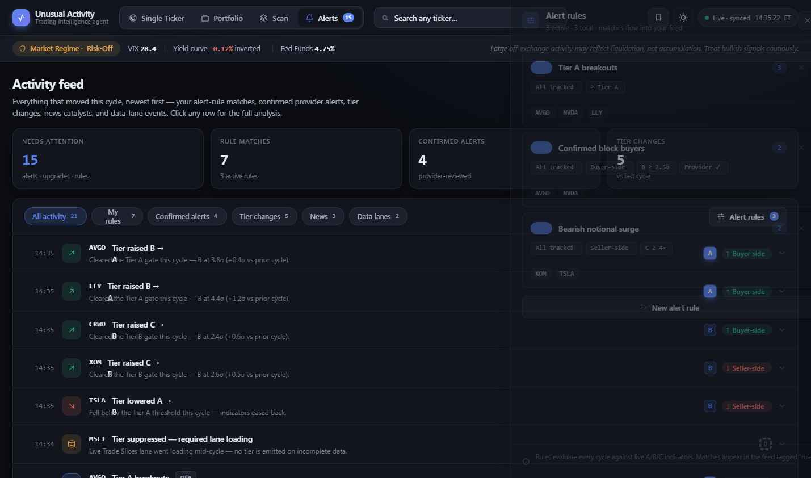
Rules list · each card: toggle, name, live match count, condition chips, matching symbols.
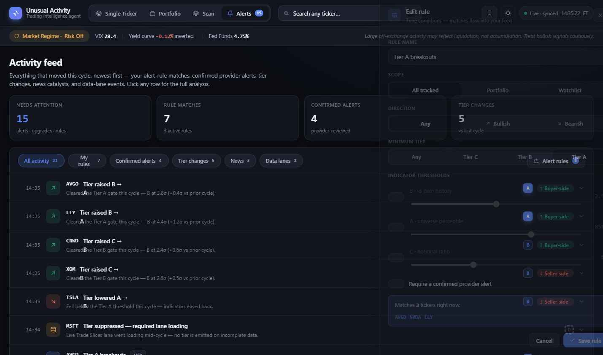
Rule editor · name, scope, direction, min tier, B/A/C threshold sliders, provider requirement, live match preview.
◆
Live preview is essential UX: the editor shows "Matches N tickers right now" as you drag thresholds, so a user tunes a rule against real current data instead of guessing. Re-evaluate on every control change.
Shared overlays
Available across modes
Watchlist drawer
Top-bar, global. Saved tickers with tier + direction; click to open, ✕ to remove. Empty state guides first save.
Tweaks panel
Demo-time controls: theme, accent, density, typeface. Production replaces with user settings.
Revalidation bar
Top progress bar + sync pill during a uta:revalidate pass; stamps a fresh time on completion.
Navigation & flow
How surfaces connect
Top-bar search
type symbol → Single Ticker
Landing card
→ switch mode
Mode tab
→ switch mode (clears openSym)
↓
Portfolio row
→ detail (A+B+C)
Scan result
→ detail (A+B+C)
Feed row
→ detail (B+C)
Rule match / watchlist
→ detail
↓ within detail ↓
Actions → drawers
Raw prints · Explain tier
Actions → compare
prior-cycle deltas inline
Related ticker
swap symbol in place
Breadcrumb
← back to list
Mode lives in app state; switching modes clears the open ticker. The detail view carries its origin mode so it applies the correct rule set and breadcrumb.
Alerts intentionally opens detail under single-ticker (B+C) rules — a feed item is a cross-universe event, not a portfolio position.
All list→detail→back transitions are in-page state (no full nav); a fade-in eases the detail mount.